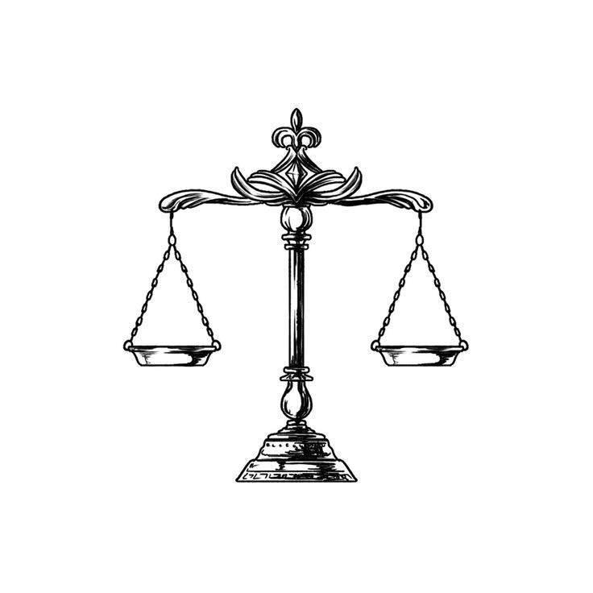

<div class="w-3/4  border-black border-4 rounded-md shadow-[8px_8px_0px_rgba(0,0,0,1)] bg-white">
    <article class="w-full">
       <figure class="w-full  border-black border-b-2">
          
       </figure>
       <div class="px-6 py-5 text-left">
         
          <h1 class="md:text-[32px] cellphone:md:text-lg cellphone:text-base mb-4">Defensoria Publica</h1>

          <p class="md:text-lg cellphone:text-base font-bold text-justify w-full mb-3">
            O Que é a Defensoria Pública?
            </p>
          <p class="text-base text-justify w-full mb-3">
            A Defensoria Pública é uma instituição prevista pela Constituição Federal do Brasil de 1988. Ela foi criada para garantir que todas as pessoas, independentemente de sua situação financeira, possam acessar a justiça. Os defensores públicos, profissionais de direito especialmente treinados, trabalham para representar e orientar pessoas que precisam de assistência jurídica, mas não têm meios para arcar com os custos.  
          </p>

          <p class="md:text-lg cellphone:text-base font-bold text-justify w-full mb-3">
            Quem Pode Acessar a Defensoria Pública?
            </p>
          <p class="text-base text-justify w-full mb-3">
            A Defensoria Pública é uma instituição prevista pela Constituição Federal do Brasil de 1988. Ela foi criada para garantir que todas as pessoas, independentemente de sua situação financeira, possam acessar a justiça. Os defensores públicos, profissionais de direito especialmente treinados, trabalham para representar e orientar pessoas que precisam de assistência jurídica, mas não têm meios para arcar com os custos.
          </p>
     
        <p class="text-base text-justify w-full mb-3">
            Aqui estão algumas categorias de pessoas que podem acessar a Defensoria Pública:
        </p>
        
        <ul class="list-disc pl-5">
            <li class="font-bold mb-2 mt-2">Pessoas de baixa renda: Indivíduos ou famílias com renda limitada, que não podem arcar com custos advocatícios e judiciais.</li>
            <li class="font-bold mb-2 mt-2">Vítimas de violência doméstica: Mulheres que sofrem violência podem acessar a Defensoria para obter orientação jurídica e proteção.</li>
            <li class="font-bold mb-2 mt-2">Pessoas envolvidas em processos criminais: Qualquer pessoa acusada de um crime tem o direito à defesa, mesmo que não tenha recursos para contratar um advogado.</li>
            <li class="font-bold mb-2 mt-2">Pessoas em situação de vulnerabilidade social: Isso inclui populações em situação de rua, indígenas, pessoas trans, entre outras.</li>
        </ul>
        
        <p class="md:text-lg cellphone:text-base font-bold text-justify w-full mb-3">
            Como Acessar a Defensoria Pública?
        </p>

        <p class="text-base text-justify w-full mb-3">
            Para obter ajuda da Defensoria Pública, a pessoa interessada deve procurar o escritório ou unidade da Defensoria mais próxima. Em geral, é necessário apresentar documentos que comprovem a situação financeira, como comprovantes de renda, carteira de trabalho, entre outros. Após a análise da situação, a pessoa é encaminhada para um defensor público, que prestará a assistência jurídica necessária.

            Além do atendimento presencial, algumas Defensorias Públicas possuem canais de comunicação online, como sites e aplicativos, onde é possível obter informações, agendar atendimentos e até receber orientação jurídica preliminar.
        </p>

        <p class="md:text-lg cellphone:text-base font-bold text-justify w-full mb-3">
            Quais Serviços a Defensoria Pública Oferece?
        </p>

        <p class="text-base text-justify w-full mb-3">
            A Defensoria Pública pode prestar diversos tipos de serviços jurídicos, incluindo:
        </p>
        
        <ul class="list-disc pl-5">
            <li class="font-bold mb-2 mt-2">Orientação jurídica: Orientação sobre direitos, deveres e procedimentos legais.</li>
            <li class="font-bold mb-2 mt-2">Representação em processos judiciais: O defensor público atua como advogado, representando o cliente em tribunal.</li>
            <li class="font-bold mb-2 mt-2">Mediação e conciliação: Tentativa de resolução de conflitos por meio de acordos entre as partes envolvidas.</li>
            <li class="font-bold mb-2 mt-2">Acompanhamento de casos de violência doméstica: Proteção e orientação para vítimas de violência doméstica.</li>
            <li class="font-bold mb-2 mt-2">Defesa em processos criminais: Defesa de pessoas acusadas de crimes, desde o início do processo até a sentença.</li>
        </ul>

        <p class="md:text-lg cellphone:text-base font-bold text-justify w-full mb-3">
            Conclusão
        </p>

        <p class="text-base text-justify w-full mb-3">
            A Defensoria Pública é uma peça fundamental do sistema de justiça brasileiro, assegurando que o acesso à justiça seja um direito de todos, independentemente de sua condição financeira. Se você ou alguém que você conhece precisa de assistência jurídica, mas não tem meios para contratar um advogado particular, a Defensoria Pública é o caminho a seguir. Lembre-se de reunir os documentos necessários para comprovar sua situação financeira e buscar o escritório mais próximo para agendar um atendimento.
        </p>
       

        <div class="flex flex-col w-full bg-[#69987C] p-5 rounded-md">
            <p class="md:text-lg cellphone:text-base font-bold">Verifique os critérios abaixo para determinar se você tem direito à assistência da Defensoria Pública:</p>
        <div class="flex flex-row justify-between w-full">

         
            <div>
            <div>
                <input  id="fin" class="inp border border-green-950 rounded-md cursor-pointer" type="checkbox" name="" id="">
                <label for="fin" class="md:text-lg cellphone:text-base font-bold cursor-pointer hover:border">Situação Financeira</label>
            </div>
            <div>
                <input id="renda" class="inp border border-green-950 rounded-md md:text-lg cellphone:text-base cursor-pointer " type="checkbox" name="" id="">
                <label for="renda" class="md:text-lg cellphone:text-base font-bold cursor-pointer hover:border">Renda</label>
            </div>
            <div>
                <input id="nat" class="inp border border-green-950 rounded-md cursor-pointer" type="checkbox" name="" id="">
                <label for="nat" class="md:text-lg cellphone:text-base font-bold cursor-pointer hover:border">Natureza do Caso</label>
            </div>
            <div>
                <input id="doc" class="inp border border-green-950 rounded-md cursor-pointer" type="checkbox" name="" id="">
                <label for="doc" class="md:text-lg cellphone:text-base font-bold cursor-pointer hover:border">Documentação</label>
            </div>
            </div>
            
        </div> 
        </div>
        <div>
            <span id="resposta" class="md:text-lg cellphone:text-base font-bold"></span>
        </div>
       </div>

  </article>
  </div>


